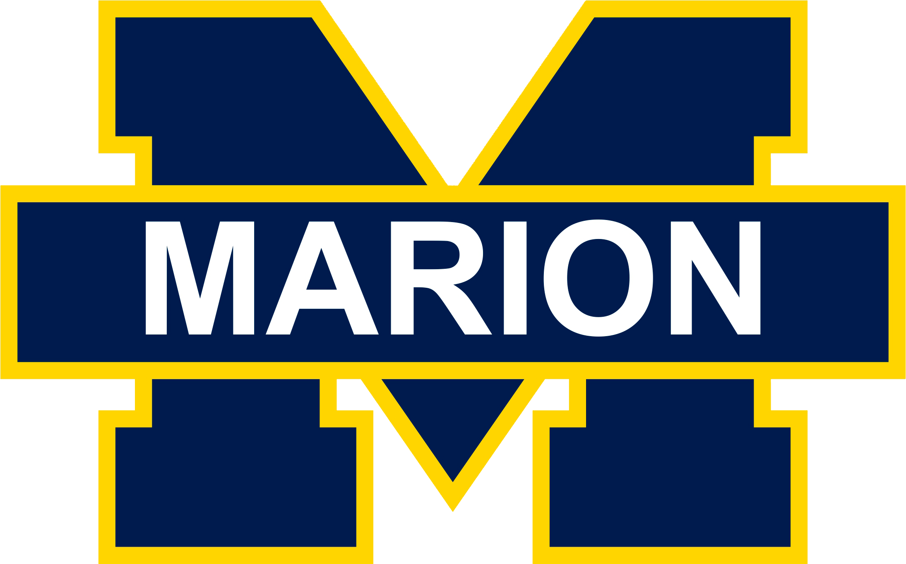

About Me
Hi there, I'm Maxwell, and I have always been captivated by the wonders of science. After completing my studies in chemistry, I found myself yearning to share my passion with others. I taught at MHS for 10 years and was frustrated by the lack of accessible science supplies. So one day, I decided to take matters into my own hands. With relentless determination, I founded Maxwell Scientific School Supplies & More, a haven for students and teachers in need of high-quality school science supplies and more. Through meticulous research, hard work, and a dash of entrepreneurial spirit, I brought my vision to life. Today, Maxwell Scientific School Supplies & More stands as a thriving hub in Marion, inspiring the scientific minds of tomorrow and empowering them to explore the wonders of the world around them.
Outreach
I grew up in Marion, so I strive to give back to the community. We support Marion District 2 by conducting engaging science workshops for students K-12, providing exclusive discounts and customized supply packages for teachers, collaborating with educators to meet their specific needs, and donating science equipment to bridge the resource gap.